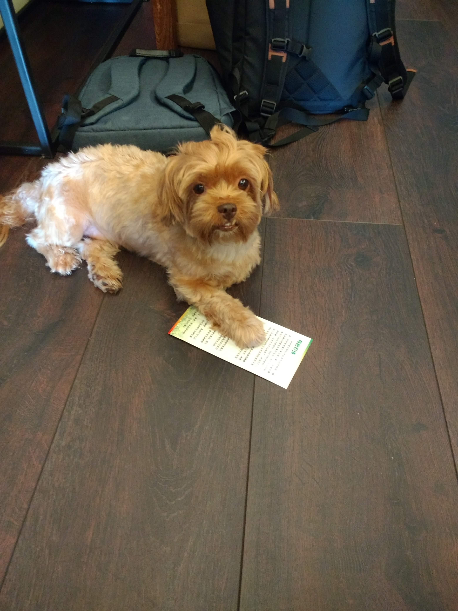

Dog Meat Soup

Description
Bosintang (boshintang) or gaejangguk or in North Korea called dangogiguk is a
Korean soup which includes dog meat as its main ingredient.
Ingredients
- 100 g of boiled dog meat
- 500 g of gravy
- 20 g of green onion
- 10 g of a leek
- 10 g of perilla leaves
- 100 g of taro stalk soaked in water
- 8 g of slat
- 2 g of mashed garlic
- 3 of perilla
- 2 g of red pepper
- 2 g of mashed ginger
- a little amount of pepper
Steps:
- After boiling the meat with gravy and stalk of taro for some time,
boil again after putting vegetables and other ingredients into it.
- Before eating, sprinkle pepper on it and put into an earthen bowl.
- The stalk of taro is to be kept in cold water one or two days to get rid of its smell and taste.
Return Home